무슨 Event인가?
이벤트 타입, 제목, 발생/기준 시점을 먼저 배치해 사용자가 맥락을 놓치지 않게 합니다.
High-fidelity case study package
시장 이벤트를 모바일에서 빠르게 읽고, 내 보유/관심/관련 맥락과 확인 가능한 근거를 본 뒤, 더 깊게 볼 필요가 있는지 판단하도록 돕는 concept-level triage 화면입니다.
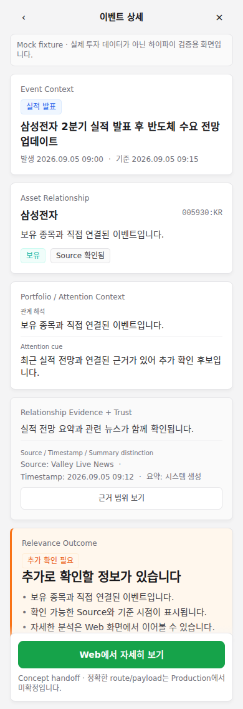
01 Problem and context
이 화면의 목적은 투자 판단을 대신하는 것이 아니라, 이벤트가 어떤 자산과 연결되는지, 그 관계가 보유/관심/관련/미확인 중 무엇인지, 그리고 어떤 근거와 한계가 있는지 보여주는 것입니다.
이벤트 타입, 제목, 발생/기준 시점을 먼저 배치해 사용자가 맥락을 놓치지 않게 합니다.
Holding, Watchlist, Related-only, Unconnected를 분리해 관심과 보유를 섞지 않습니다.
Source, timestamp, 요약 구분, 데이터 부족을 Outcome보다 먼저 읽게 합니다.
02 Product role split
모바일 화면은 깊은 재무표나 긴 리서치를 복제하지 않고, Event - Asset - Evidence - Handoff의 판단 전 구조를 압축해서 보여줍니다.
Event Context, Asset Relationship, Portfolio/Watchlist Context, Evidence, non-advisory Outcome, Web Handoff entry.
Deep analysis, documents, transcripts, advanced charts, longer research, detailed investment analysis.
03 Locked IA
Chromium screenshot QA에서도 이 순서가 시각적으로 유지되는지 확인했습니다.
04 Canonical screen anatomy
Canonical state는 `CHECK_FURTHER + Holding + Evidence available + Concept Web Handoff`입니다.
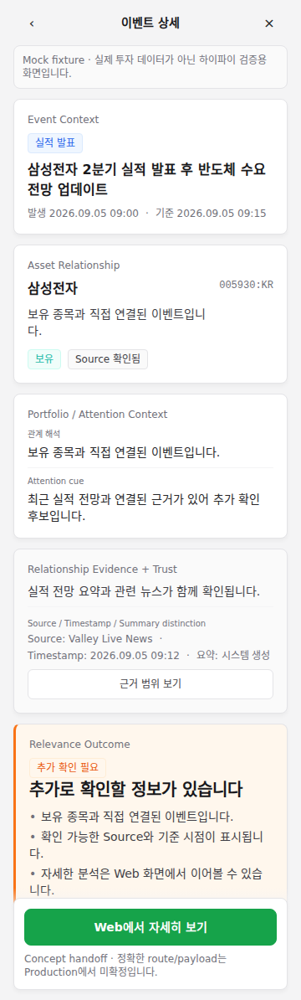
05 Three non-advisory outcomes
의미는 label, copy, hierarchy, icon/shape, supporting evidence 순서로 전달하고 색은 보조 cue로만 사용합니다.
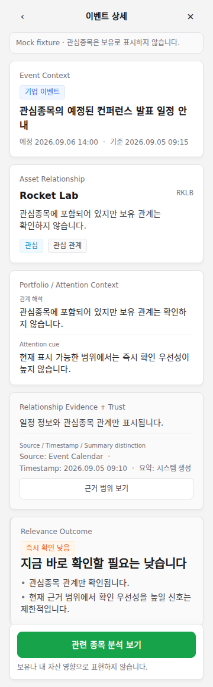
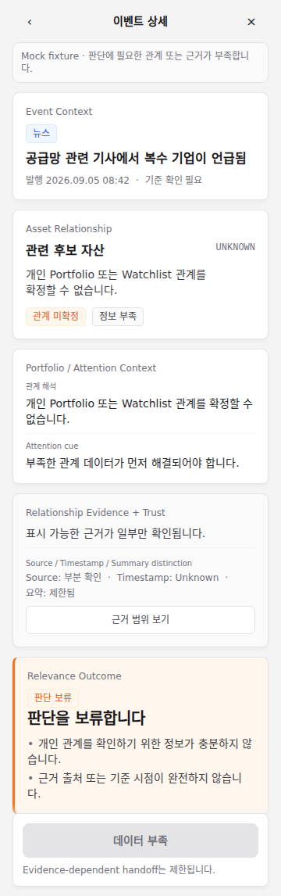
06 Portfolio context variants
Portfolio-aware 화면의 신뢰는 개인 맥락을 과장하지 않는 데서 시작합니다.
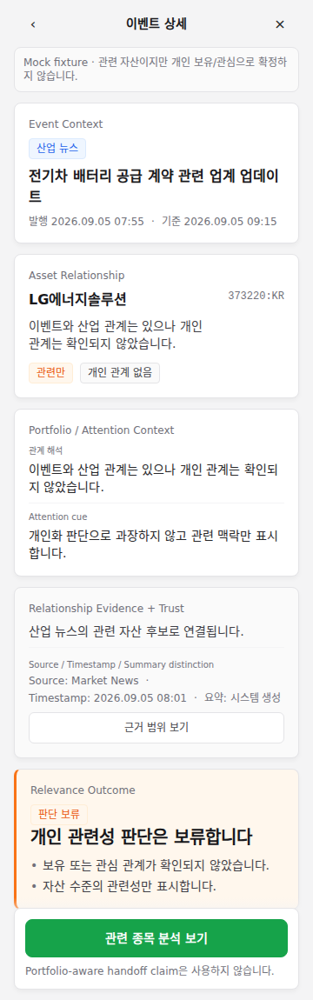
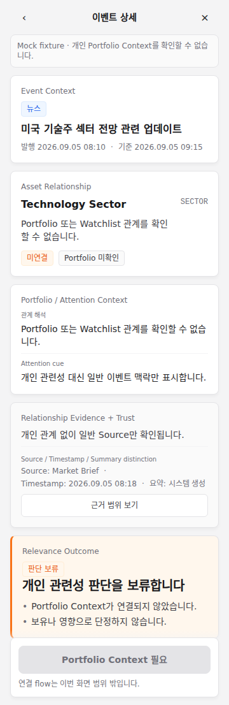
07 Trust and evidence states
Partial, Empty, Stale, Source Unavailable, Permission, Error는 모두 다른 사용자의 해석을 만들기 때문에 같은 Empty로 묶지 않습니다.
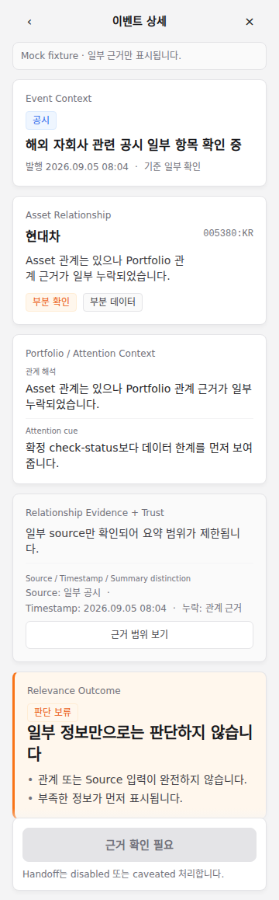
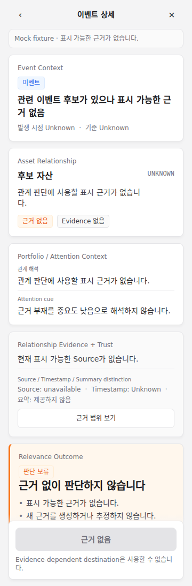
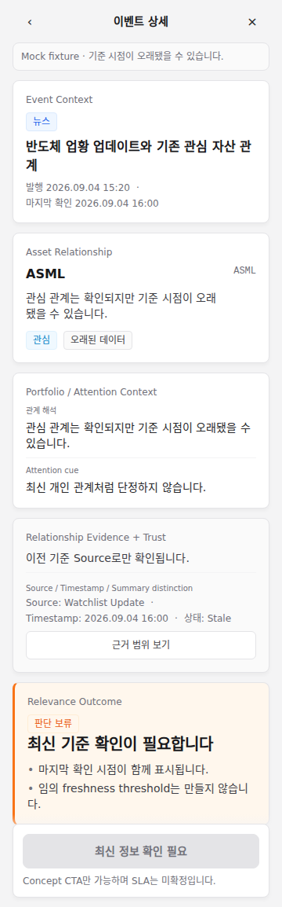
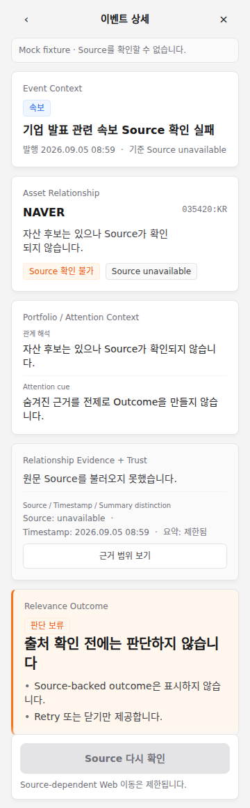
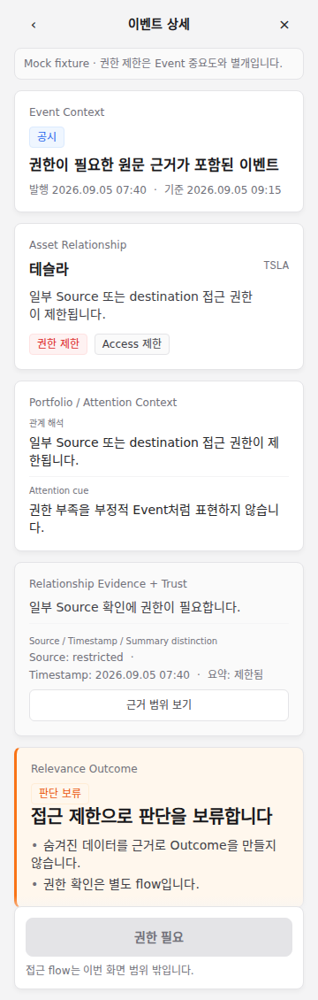
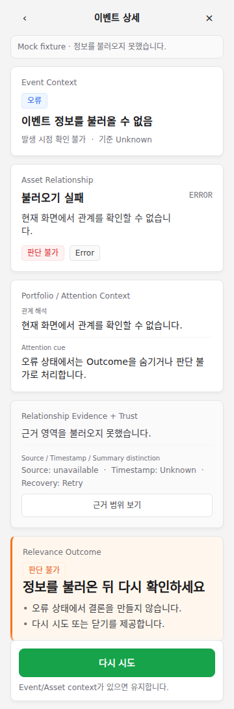
08 Responsive screenshot QA evidence
Screenshot은 장식이 아니라 QA evidence입니다. 첫 viewport, title/ticker/badge/source wrapping, sticky CTA overlap을 확인하는 기준으로 사용합니다.
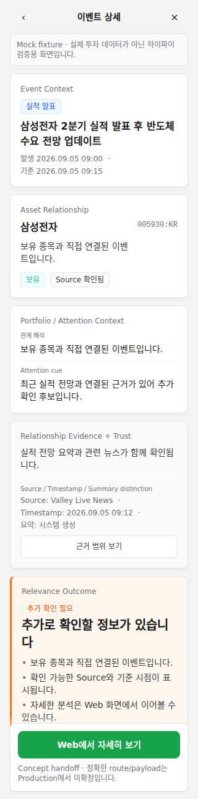
09 Visual QA result
QA result is scoped to visual hierarchy, responsive behavior, screenshot state coverage, and visual accessibility requirements.
10 Design-system mapping
이 디자인 시스템은 Valley 스타일을 참고한 모바일 설계용 reference입니다. Product policy나 Production 범위를 결정하지 않고, surface, type, badge, evidence, feedback, CTA 표현을 일관되게 유지하는 데 사용했습니다.
11 Remaining limits
포트폴리오에서 강한 인상보다 중요한 것은 claim boundary입니다. 이 결과는 high-fidelity와 visual QA의 완료이지 Production 해제가 아닙니다.